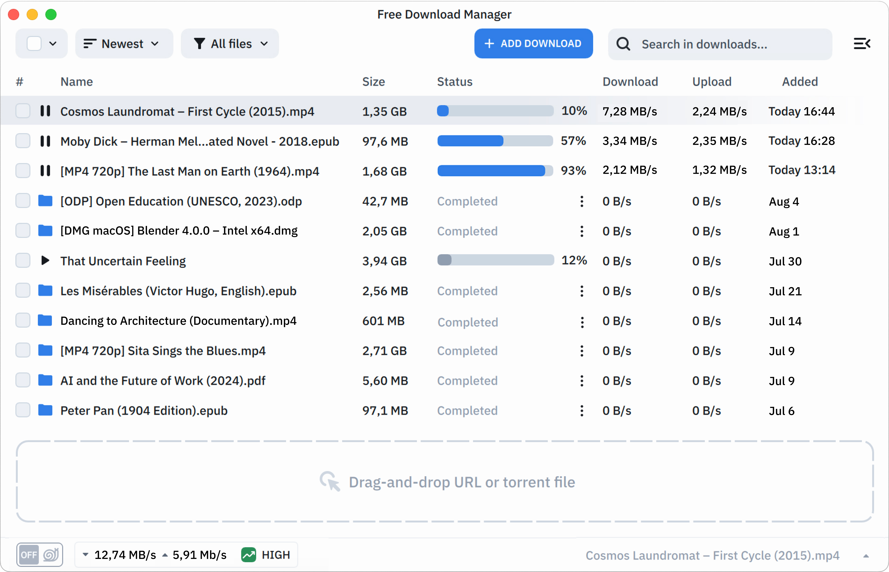

手把手把 Free Download Manager 用起来——从装到榨干每一个功能
还在用浏览器自带下载？FDM 六版本的多线程、ZIP 部分下载、浏览器扩展拦截三步配置完，下载速度翻倍不只是传说。
这篇教程写完，你能独立把 Free Download Manager 配成主力下载器：装完跑起来、浏览器点下载自动进 FDM、大压缩包只挑需要的文件下，最后还能做成便携版塞 U 盘。全程 Windows 环境为例，macOS 和 Linux 差异的地方会标出来。
准备：确认版本和平台
写这篇时 FDM 主流是 6.x 系列（当前最新 6.36），2023 年从经典 3.9 全面切过来的——界面变现代了、加了 BT 客户端、移动端也有了。如果你机器上还装着 3.9，建议先卸掉再装 6.x，两套配置不兼容。
平台支持方面：Windows 10/11 原生安装包、macOS 用 Homebrew cask 或 dmg、Linux 官方有 .deb 和 tar.gz。下面所有操作默认 Windows 64 位。
第一步：安装 + 浏览器扩展（必做，否则还是半残）
FDM 本体装完只有一个空壳，要把浏览器扩展一起装好才是完全体。
1.1 装桌面端
从Free Download Manager官网下载安装包，双击一路下一步就行。默认装到 C:\Program Files\FreeDownloadManager.ORG\Free Download Manager\，可以改路径但别装系统盘根目录——UAC 偶尔会拦截写入。
装完第一次启动会弹「首次启动向导」：选下载保存目录（别选桌面，专门建一个 Downloads/FDM）、要不要开机自启、是否开启剪贴板 URL 监控。建议勾选剪贴板监控——后面复制链接直接进队列，少一步手动粘贴。
1.2 装浏览器扩展（Chrome / Edge / Firefox 全支持）
打开 FDM 主界面，顶部菜单「工具 → 浏览器集成」，会弹出一个窗口列出支持的浏览器，每个右边有「安装」按钮。点你正在用的那几个，它自动跳到扩展商店页面，点「添加到浏览器」就行。

装完扩展一定要给它开「允许在所有网站访问」权限——Chrome/Edge 打开扩展管理页，找到 FDM 扩展点详情，站点访问权限选「所有网站」。权限没给够的话自动拦截会静默失效，点下载还是浏览器自己下。
1.3 验证扩展生效
随便找一个带 .zip 或 .mp4 下载链接的网页（比如 GitHub Release 页面），点那个链接——如果 FDM 弹了「添加下载任务」对话框、URL 已经预填，说明扩展通了。如果没弹，回到 1.2 检查权限，再看 FDM 托盘图标是不是在运行。
第二步：主界面三区布局要心里有数
FDM 6.x 主界面是四区布局，日常操作主要用中央下载队列和左侧分类面板：
- 顶部工具栏：最常用的三个按钮——「+ 添加下载」、「暂停 / 继续」、「打开所在文件夹」。右键工具栏可以自定义按钮组，把不常用的（比如「镜像源管理」）去掉，界面会清爽很多。
- 左侧分类面板：按状态分（活动中 / 已完成 / 已取消）、按文件类型分（视频 / 压缩包 / 安装包 / 种子），下面还有站点浏览器、HTML 蜘蛛、BT 全局视图三个专项工具入口。F9 可以折叠整个左侧面板给下载队列腾空间。
- 中央下载队列：所有任务的进度条、速度、剩余时间都在这。点表头可以排序，右键表头可以隐藏不常用的列（建议只留文件名 / 进度 / 大小 / 速度 / 剩余时间五列）。选中一个任务，下方详情面板会展开，标签页里有分段下载的实时速度、BT 的 peers 列表等。
- 底部状态栏：左边第一个是流量模式（极速 / 温和 / 浏览优先），日常用「极速」就行，开浏览器看视频卡了再切「浏览优先」。右边显示总速度和剩余时间，全局只读。
第三步：最实用的杀手功能——ZIP 部分下载
这个功能必须单独拎出来讲，因为很多人用了好几年 FDM 都不知道有。
场景：资源站给了一个 2.3 GB 的考研资料 ZIP，里面 500 个文件，你只需要英语的 15 本 PDF。传统下载器只能把 2.3 GB 整体拉下来再解压，FDM 可以只从远程 ZIP 里挑你要的那几个文件下。
操作步骤
第一步：正常粘贴 ZIP 链接进 FDM 添加对话框，别点确定。
第二步：对话框里有个「浏览压缩包内容」按钮——点它。FDM 向服务器请求 ZIP 的中央目录记录（就在 ZIP 文件末尾，通常几十 KB），几秒钟内就能列出 ZIP 里所有文件的目录结构。
第三步：弹出的文件浏览器里，默认全部勾选。右键 → 全不选，然后手动勾英语目录下的 PDF 文件。右侧会显示你选中的总大小——刚才那个例子里只勾 120 MB。
第四步：点确定开始下载。FDM 用分段下载引擎直接向服务器请求这 120 MB 字节范围，跳过 ZIP 里其他 2.18 GB。下完自动解压，保留 ZIP 里的原始目录结构。
什么情况会失败
- 服务器不支持 Range 请求（极少见，返回 200 而不是 206），FDM 会提示「此服务器不支持浏览压缩包内容」，只能全量下。
- ZIP 加了密码——加密 ZIP 的中央目录本身也被加密，FDM 读不出内容清单。
- ZIP 用了固实压缩——多个文件共用一个压缩字典，想从中间单独拿一个就得先解压前面所有的，本质和全量下载差不多。
目前这个功能只支持 ZIP 格式，RAR、7z、TAR 都不支持，更多边界条件可以在Free Download Manager文档里查到。遇到 RAR 包就老老实实全量下吧。
第四步：做成便携版塞 U 盘（工作电脑不让装软件的福音）
经典版 3.9 有一键创建便携版的入口，6.x 把它藏起来了，但原理没变——改两个环境变量就行。
Windows 便携版制作步骤
第一步：正常装一份 FDM，把整个安装目录拷出来（默认路径 C:\Program Files\FreeDownloadManager.ORG\Free Download Manager\）。
第二步：拷到 U 盘或任意位置，比如 E:\PortableApps\FDM\。可以删掉 uninstall.exe 和不认识的语言文件减体积。
第三步：在这个目录里创建一个 start_fdm.bat 启动脚本，内容就四行：
@echo off
set APPDATA=%~dp0data
set LOCALAPPDATA=%~dp0data
"%~dp0fdm.exe"这四行的意思：把系统的 APPDATA 和 LOCALAPPDATA 环境变量都重定向到 U 盘里的 data/ 子目录，这样 FDM 所有配置、缓存、下载历史都写 U 盘，不碰系统硬盘。
第四步：在便携目录下手动建一个空的 data/ 文件夹。双击 start_fdm.bat 启动，随便改一个偏好设置，关掉重开确认设置还在——搞定。
便携版的坑
- 浏览器扩展装不了——扩展需要写系统级目录，便携版没权限。每台用便携版的电脑都要单独装扩展，或者直接用拖拽 URL / 剪贴板粘贴代替。
- U 盘盘符会变——插到不同电脑上盘符可能从 E: 变 F:，FDM 里保存的历史路径会失效。但下载进度本身不受影响。
- 企业安全软件可能拦截——某些公司的终端管理会监控 U 盘上运行的 .exe，需要找 IT 加白名单。
便携版适合工作电脑不让装软件、或者多台电脑共享同一个下载队列的场景。单机用还是装正式版省心。
常见卡点（新手最容易翻的三个车）
卡点一：扩展装了但自动拦截不生效
90% 的情况是扩展权限没给够。打开 Chrome/Edge 的扩展管理页，找到 FDM 扩展 → 详情 → 站点访问权限选「所有网站」。如果还是不行，检查 FDM 托盘图标是不是在运行（托盘图标也可以关，但关了剪贴板监控也停了）。
卡点二：下载速度上不去
先看底部状态栏的流量模式——是不是不小心切到「温和」或「浏览优先」了？切回「极速」。然后看 FDM 里的分段数（偏好设置 → 下载 → 分段数，默认 16，可以加到 32）。如果是某个特定服务器慢，右键那个任务 → 镜像源管理，FDM 会自动找同文件的其他下载源。
卡点三：BT 任务连不上 peers
底部状态栏的 DHT 状态是不是显示离线？如果是，去 BT 全局设置把 DHT 开起来（默认应该开的，但某些精简安装包可能关了）。再检查 Windows 防火墙有没有给 FDM 放行——第一次启动防火墙会弹窗，点「允许访问」就行，点错了去防火墙高级设置里手动加。
进阶一句话
把 FDM 的远程控制功能（Ctrl+Alt+R）开起来，手机上装 FDM Remote 客户端，出门在外也能在手机上给家里电脑加下载任务——回家就下完了。